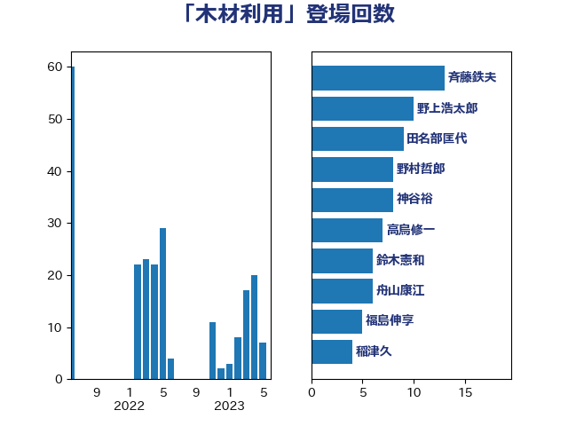

単語「木材利用」

| 斉藤鉄夫 | 公明党 | 13 回 |
| 野上浩太郎 | 自由民主党 | 10 回 |
| 田名部匡代 | 立憲民主党 | 9 回 |
| 野村哲郎 | 自由民主党 | 8 回 |
| 神谷裕 | 立憲民主党 | 8 回 |
| 高鳥修一 | 自由民主党 | 7 回 |
| 鈴木憲和 | 自由民主党 | 6 回 |
| 舟山康江 | 国民民主党 | 6 回 |
| 福島伸享 | 無所属 | 5 回 |
| 稲津久 | 公明党 | 4 回 |
| 武部新 | 自由民主党 | 4 回 |
| 古川直季 | 自由民主党 | 4 回 |
| 舞立昇治 | 自由民主党 | 3 回 |
| 渡辺猛之 | 自由民主党 | 3 回 |
| 梅村みずほ | 日本維新の会 | 3 回 |
| 柿沢未途 | 無所属 | 3 回 |
| 松本剛明 | 自由民主党 | 3 回 |
| 中村裕之 | 自由民主党 | 3 回 |
| 中山展宏 | 自由民主党 | 3 回 |
| 金子恭之 | 自由民主党 | 2 回 |
| 重徳和彦 | 立憲民主党 | 2 回 |
| 藤木眞也 | 自由民主党 | 2 回 |
| 紙智子 | 日本共産党 | 2 回 |
| 福田昭夫 | 立憲民主党 | 2 回 |
| 岸田文雄 | 自由民主党 | 2 回 |
| 尾身朝子 | 自由民主党 | 2 回 |
| 小林茂樹 | 自由民主党 | 2 回 |
| 古川元久 | 国民民主党 | 2 回 |
| 勝俣孝明 | 自由民主党 | 2 回 |
| 加藤明良 | 自由民主党 | 2 回 |
| 金子恵美 | 立憲民主党 | 1 回 |
| 近藤昭一 | 立憲民主党 | 1 回 |
| 豊田俊郎 | 自由民主党 | 1 回 |
| 角田秀穂 | 公明党 | 1 回 |
| 石井浩郎 | 自由民主党 | 1 回 |
| 漆間譲司 | 日本維新の会 | 1 回 |
| 寺田静 | 無所属 | 1 回 |
| 堀井巌 | 自由民主党 | 1 回 |
| 佐藤公治 | 立憲民主党 | 1 回 |
| 伊藤渉 | 公明党 | 1 回 |
| 下野六太 | 公明党 | 1 回 |